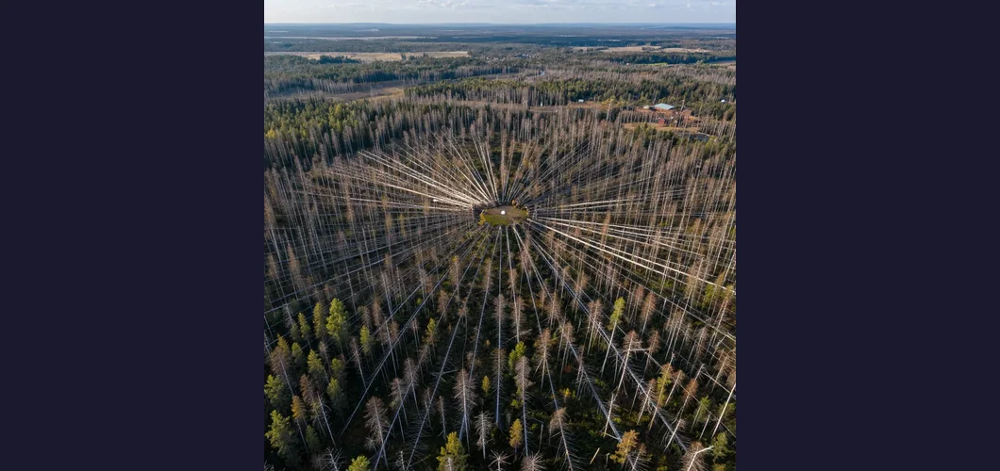
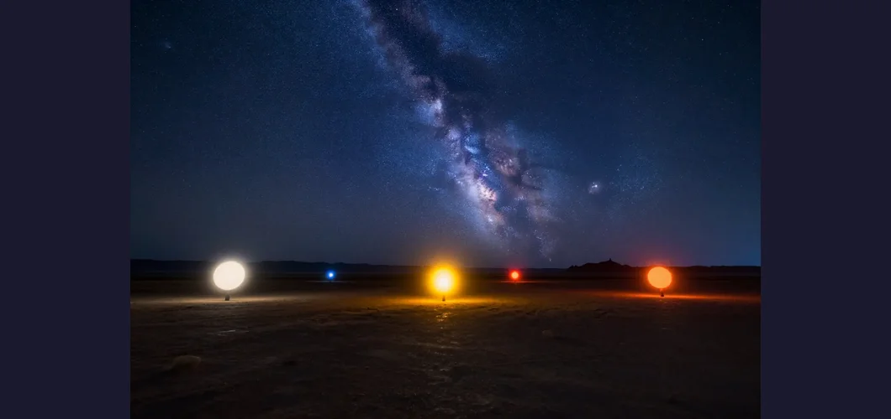
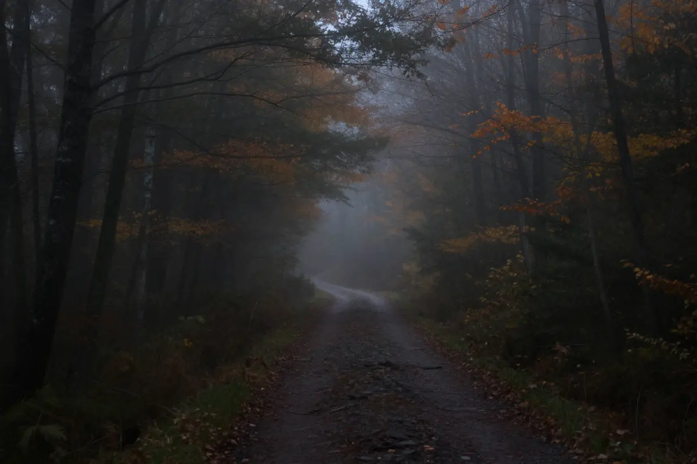
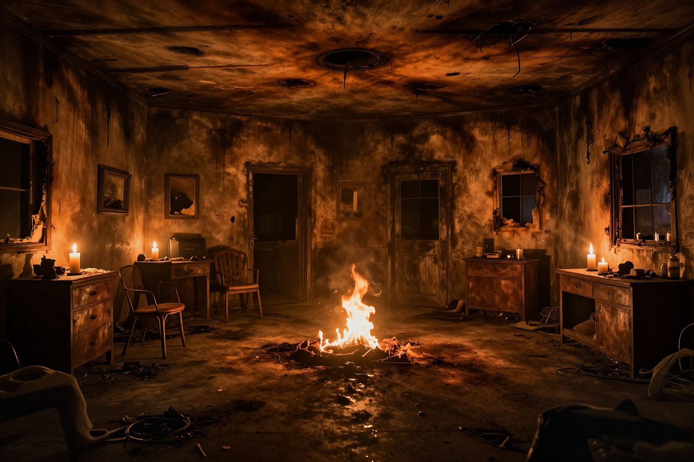
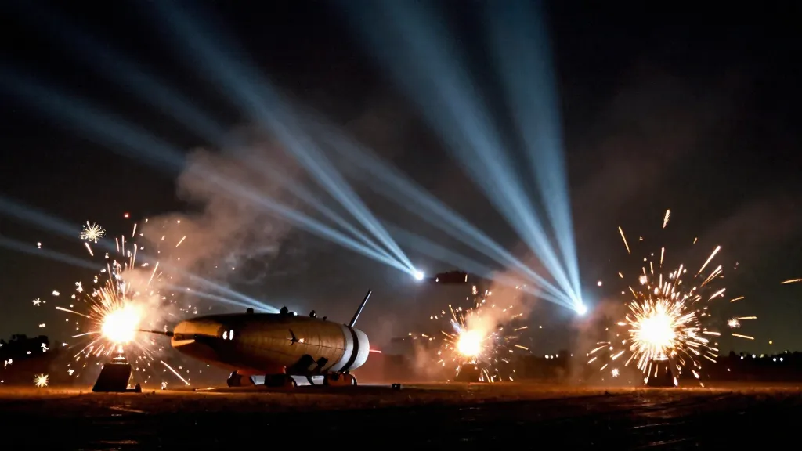

Unknown Phenomena

The Tunguska Event: The Morning the Sky Exploded Over Siberia

Dyatlov Pass Incident: The 1959 Mystery of 9 Hikers Whose Deaths Are Still Argued About

USS Nimitz Tic Tac Encounter: The Navy Pilot UFO Sighting That the Pentagon Couldn't Explain

The Mandela Effect: Why Millions of People Remember a History That Never Happened

Chupacabra: The Blood-Sucking Beast That Terrorized Latin America and Became a Global Legend

Loch Ness Monster: An Old Legend, Sonar Contacts, and the Photograph That Fooled the World

Mothman: The Winged Creature That Terrorized a West Virginia Town for 13 Months

Roswell UFO Incident: The 1947 Crash That Launched a Thousand Conspiracy Theories

Skinwalker Ranch: The 480-Acre Property in Utah Where Paranormal Activity Became a Government Secret

Bigfoot: The Elusive Creature That Keeps Eyewitnesses Coming Forward

The Phoenix Lights: Arizona's Massive 1997 UFO Sighting

The Marfa Lights: Texas Desert's Glowing Mystery

The Bermuda Triangle: Why Do Ships and Planes Keep Disappearing?

The Wow! Signal: Did We Receive a Message From Aliens in 1977?

The Philadelphia Experiment: Did the Navy Make a Ship Invisible?

The Bennington Triangle: Vermont’s Bermuda Triangle

Spontaneous Human Combustion: Can People Really Self-Ignite?

The Mysterious Monoliths: Metal Pillars from Nowhere

Pentagon UAP Reports 2024: What Does the Government Know?

The Hessdalen Lights: Mysterious Glowing Orbs That Haunt a Norwegian Valley

The Hum: A Mysterious Sound That Torments Thousands Worldwide Yet Remains Unexplained

Ball Lightning: The Ghost Orbs of Storms

The Battle of Los Angeles: Did UFOs Attack in 1942?